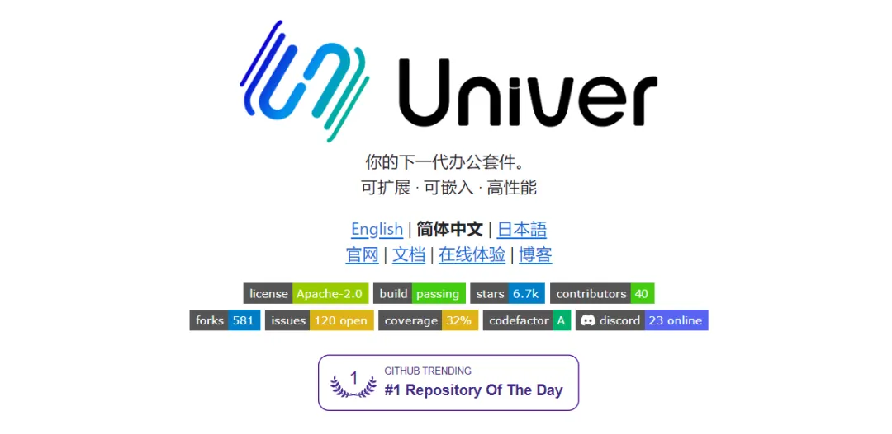
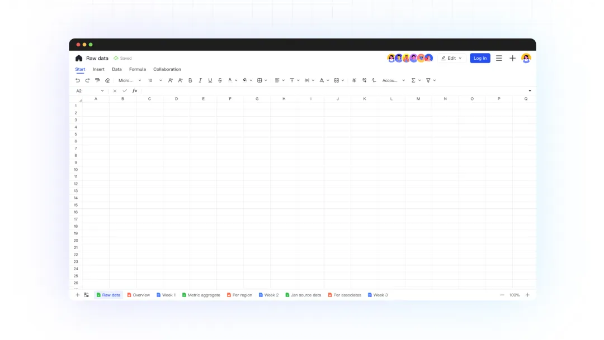
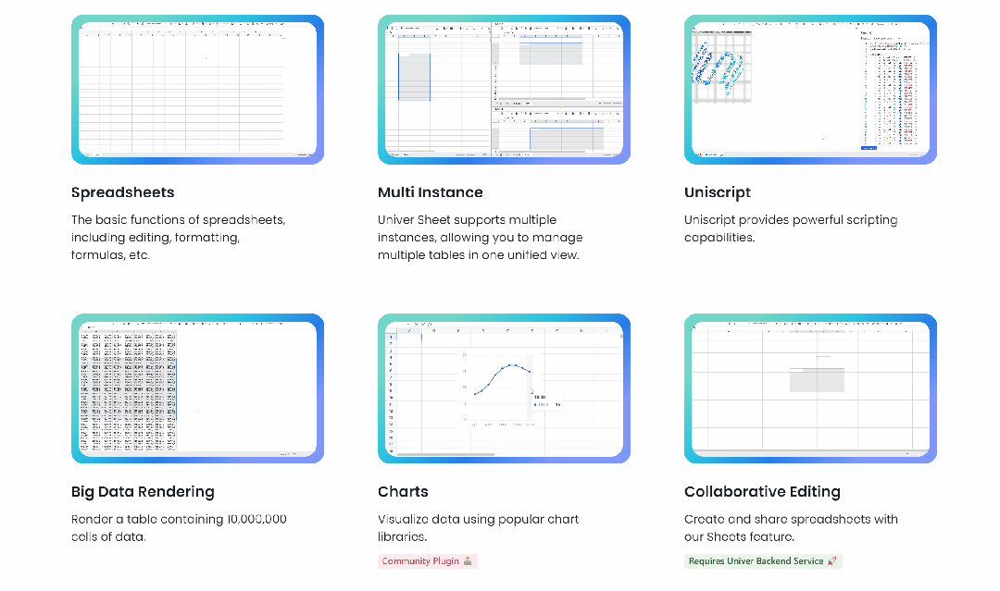
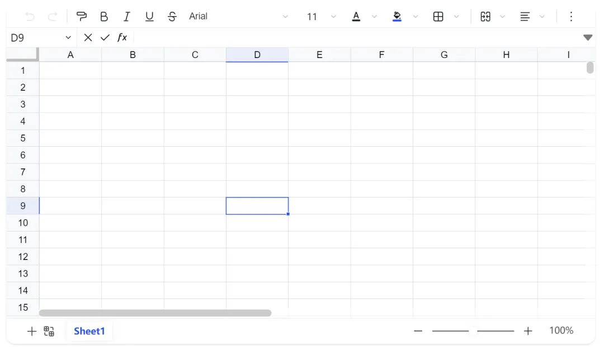

大家平时在做业务的时候，可能会遇到 在线预览、编辑 Excel 的功能，这几天发现了一个前端库，它叫 Univer，挺实用的，推荐给大家吧~
这是基本的页面效果
官网有非常多的例子，供你复制
文档地址：https://github.com/dream-num/univer/blob/dev/README-zh.md
使用 Univer 去实现一个基本的在线 Excel 页面，是很简单的
pnpm add @univerjs/facade
import "@univerjs/design/lib/index.css";
import "@univerjs/ui/lib/index.css";
import "@univerjs/docs-ui/lib/index.css";
import "@univerjs/sheets-ui/lib/index.css";
import "@univerjs/sheets-formula/lib/index.css";
import { LocaleType, Tools, Univer } from "@univerjs/core";
import { defaultTheme } from "@univerjs/design";
import { UniverFormulaEnginePlugin } from "@univerjs/engine-formula";
import { UniverRenderEnginePlugin } from "@univerjs/engine-render";
import { UniverUIPlugin } from "@univerjs/ui";
import { UniverDocsPlugin } from "@univerjs/docs";
import { UniverDocsUIPlugin } from "@univerjs/docs-ui";
import { UniverSheetsPlugin } from "@univerjs/sheets";
import { UniverSheetsFormulaPlugin } from "@univerjs/sheets-formula";
import { UniverSheetsUIPlugin } from "@univerjs/sheets-ui";
import DesignEnUS from "@univerjs/design/locale/en-US";
import UIEnUS from "@univerjs/ui/locale/en-US";
import DocsUIEnUS from "@univerjs/docs-ui/locale/en-US";
import SheetsEnUS from "@univerjs/sheets/locale/en-US";
import SheetsUIEnUS from "@univerjs/sheets-ui/locale/en-US";
import SheetsFormulaEnUS from "@univerjs/sheets-formula/locale/en-US";
const univer = new Univer({
theme: defaultTheme,
locale: LocaleType.EN_US,
locales: {
[LocaleType.EN_US]: Tools.deepMerge(
SheetsEnUS,
DocsUIEnUS,
SheetsUIEnUS,
SheetsFormulaEnUS,
UIEnUS,
DesignEnUS
),
},
});
univer.registerPlugin(UniverRenderEnginePlugin);
univer.registerPlugin(UniverFormulaEnginePlugin);
univer.registerPlugin(UniverUIPlugin, {
container: "app",
});
univer.registerPlugin(UniverDocsPlugin);
univer.registerPlugin(UniverDocsUIPlugin);
univer.registerPlugin(UniverSheetsPlugin);
univer.registerPlugin(UniverSheetsUIPlugin);
univer.registerPlugin(UniverSheetsFormulaPlugin);
univer.createUnit(UniverInstanceType.UNIVER_SHEET, {});